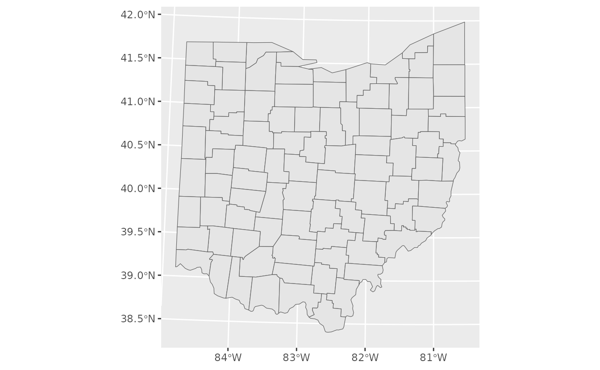
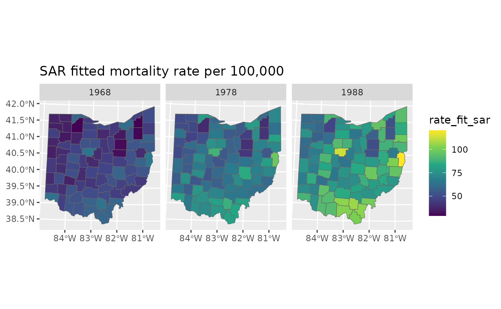
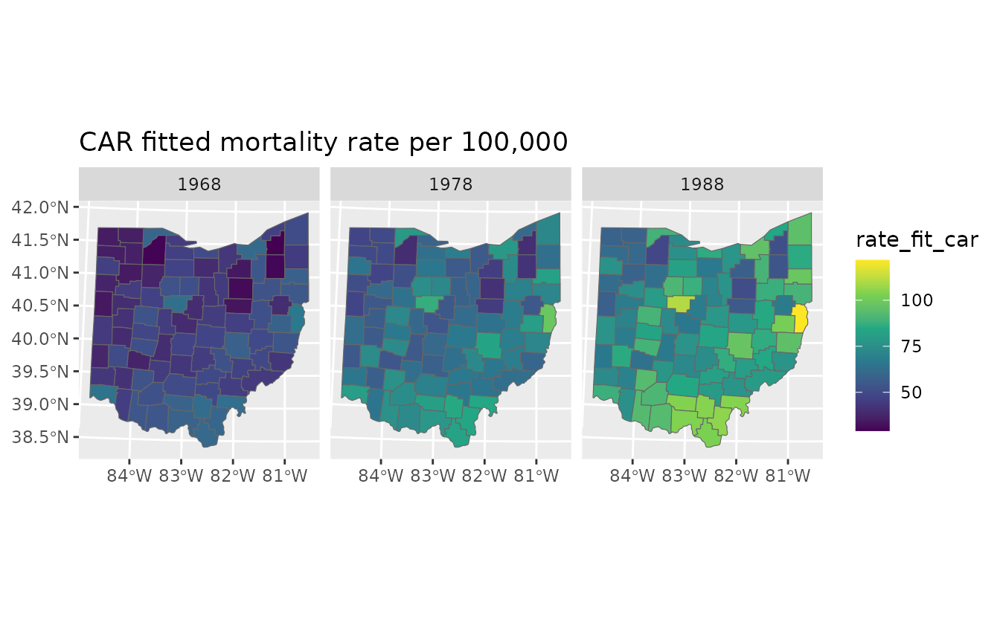
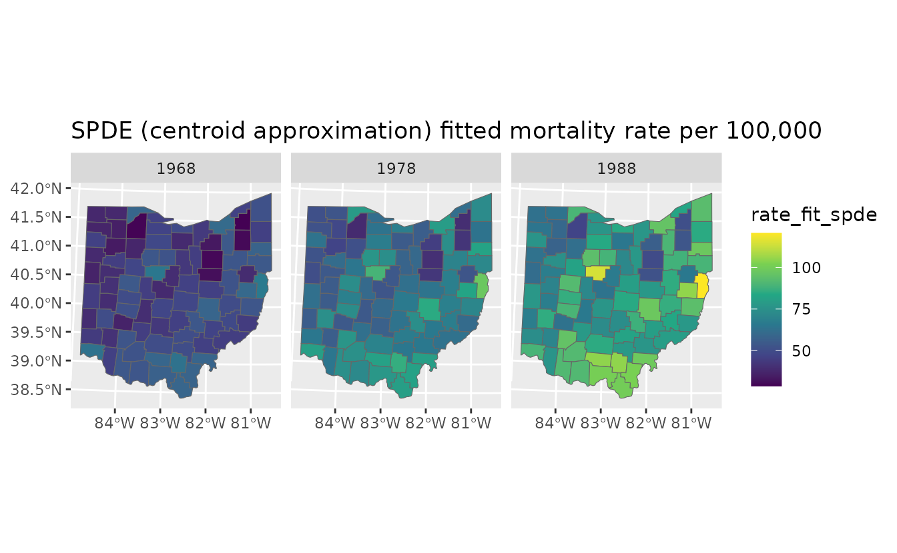
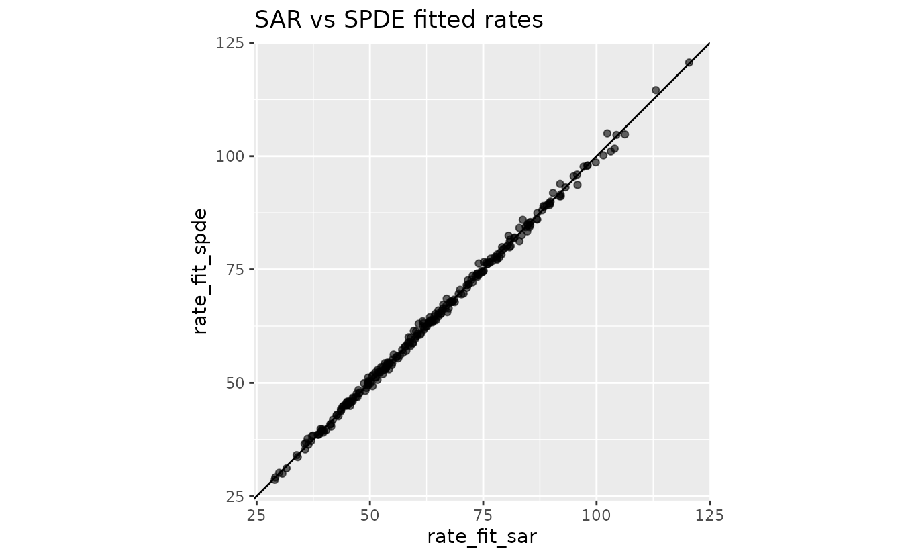
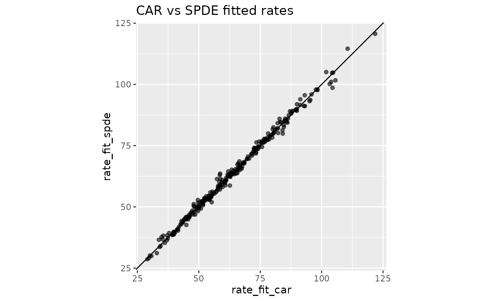
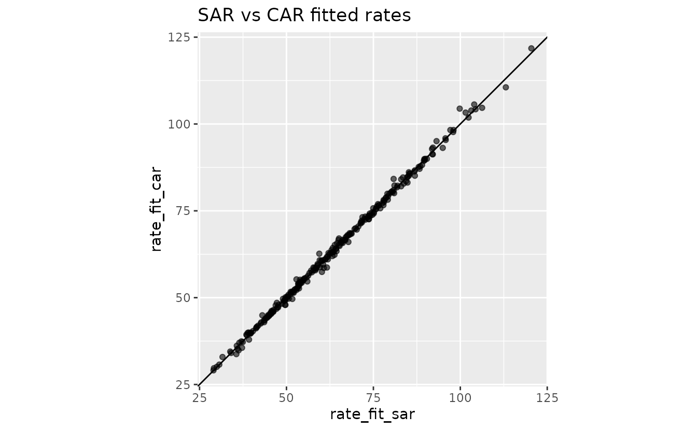

Areal models in sdmTMB: SAR, CAR, and SPDE comparison
2026-06-18
Source:vignettes/articles/areal-sar-car-spde.Rmd
areal-sar-car-spde.RmdIf the code in this vignette has not been evaluated, a rendered version is available on the documentation site under ‘Articles’.
Areal (or lattice) data are observations measured or aggregated over spatial regions or polygons, such as countries, census tracts, or administrative boundaries.
This vignette demonstrates three ways to model spatial structure in areal data using the built-in Ohio lung cancer dataset:
- SAR (
spatial_model = "sar") on polygons - CAR (
spatial_model = "car") on polygons - SPDE (
spatial_model = "spde") on polygon centroids as a geostatistical point-based version
The areal response is counts (cases) with population
offset (log(pop)), so fitted values are interpreted as
expected counts or rates.
Build an areal domain from polygons
For SAR and CAR models, we pass an areal domain (adjacency + IDs) to
mesh via make_areal_domain(). We need to
supply an igraph or sf/sfc object. In this
example, we have an sf object with a column
county that identifies polygons:
head(ohio_sf, n = 3)
#> Simple feature collection with 3 features and 1 field
#> Geometry type: POLYGON
#> Dimension: XY
#> Bounding box: xmin: 218384 ymin: 4576930 xmax: 499922 ymax: 4622820
#> Projected CRS: WGS 84 / UTM zone 17N
#> county geometry
#> 1 Lucas POLYGON ((270074 4622050, 2...
#> 2 Fulton POLYGON ((220512 4622820, 2...
#> 3 Geauga POLYGON ((499922 4617790, 4...
ggplot(ohio_sf) + geom_sf()
domain <- make_areal_domain(
ohio_sf,
id_column = "county"
)We also have a data frame with the observations:
dat <- ohio_df
head(dat, n = 3)
#> county year cases pop pct_male
#> 1 Lucas 1968 147 231377 0.4764055
#> 2 Fulton 1968 4 15571 0.5154639
#> 3 Geauga 1968 4 30887 0.4876033The county column is what links the spatial domain to
the observation data in this case because it matches the column name in
the sf object.
Fit SAR and CAR areal models
Both models use the same fixed effects and random-effects structure.
The difference is the spatial process (sar vs
car). We will be fitting a spatiotemporal version here to
demonstrate that it can be done. Of course, you could simply be fitting
a spatial model by dropping the time argument. Likewise, we
include an offset
because it makes sense with these data (so we are effectively modelling
cases per individual), but it doesn’t necessarily make sense for your
data.
fit_sar <- sdmTMB(
cases ~ 0 + as.factor(year) + pct_male,
data = dat,
mesh = domain,
spatial_model = "sar",
time = "year",
family = poisson(link = "log"),
spatial = "on",
spatiotemporal = "iid",
offset = log(dat$pop)
)
fit_car <- sdmTMB(
cases ~ 0 + as.factor(year) + pct_male,
data = dat,
mesh = domain,
spatial_model = "car",
time = "year",
family = poisson(link = "log"),
spatial = "on",
spatiotemporal = "iid",
offset = log(dat$pop)
)
sanity(fit_sar)
#> ✔ Non-linear minimizer suggests successful convergence
#> ✔ Hessian matrix is positive definite
#> ✔ No extreme or very small eigenvalues detected
#> ✔ No gradients with respect to fixed effects are >= 0.001
#> ✔ No fixed-effect standard errors are NA
#> ✔ No standard errors look unreasonably large
#> ✔ No sigma parameters are < 0.01
#> ✔ No sigma parameters are > 100
sanity(fit_car)
#> ✔ Non-linear minimizer suggests successful convergence
#> ✔ Hessian matrix is positive definite
#> ✔ No extreme or very small eigenvalues detected
#> ✔ No gradients with respect to fixed effects are >= 0.001
#> ✔ No fixed-effect standard errors are NA
#> ✔ No standard errors look unreasonably large
#> ✔ No sigma parameters are < 0.01
#> ✔ No sigma parameters are > 100
fit_sar
#> Spatiotemporal model fit by ML ['sdmTMB']
#> Formula: cases ~ 0 + as.factor(year) + pct_male
#> Mesh: domain (isotropic covariance)
#> Time column: character
#> Data: dat
#> Family: poisson(link = 'log')
#>
#> Conditional model:
#> coef.est coef.se
#> as.factor(year)1968 -7.73 0.18
#> as.factor(year)1978 -7.41 0.18
#> as.factor(year)1988 -7.20 0.18
#> pct_male 0.08 0.36
#>
#> SAR spatial dependence: 0.31
#> Spatial SAR field scale: 0.21
#> Spatiotemporal IID SAR field scale: 0.07
#> ML criterion at convergence: 825.435
#>
#> See ?tidy.sdmTMB to extract these values as a data frame.
fit_car
#> Spatiotemporal model fit by ML ['sdmTMB']
#> Formula: cases ~ 0 + as.factor(year) + pct_male
#> Mesh: domain (isotropic covariance)
#> Time column: character
#> Data: dat
#> Family: poisson(link = 'log')
#>
#> Conditional model:
#> coef.est coef.se
#> as.factor(year)1968 -7.72 0.18
#> as.factor(year)1978 -7.40 0.18
#> as.factor(year)1988 -7.19 0.18
#> pct_male 0.06 0.35
#>
#> CAR spatial dependence: 0.60
#> Spatial CAR field scale: 0.47
#> Spatiotemporal IID CAR field scale: 0.15
#> ML criterion at convergence: 825.199
#>
#> See ?tidy.sdmTMB to extract these values as a data frame.You can inspect random-effect parameters and compare model fit summaries:
tidy(fit_sar, "ran_pars")
#> # A tibble: 3 × 5
#> term estimate std.error conf.low conf.high
#> <chr> <dbl> <dbl> <dbl> <dbl>
#> 1 sigma_O 0.213 0.0244 0.170 0.267
#> 2 sigma_E 0.0704 0.0207 0.0395 0.125
#> 3 rho_sar 0.313 0.175 -0.0576 0.607
tidy(fit_car, "ran_pars")
#> # A tibble: 3 × 5
#> term estimate std.error conf.low conf.high
#> <chr> <dbl> <dbl> <dbl> <dbl>
#> 1 sigma_O 0.465 0.0554 0.369 0.588
#> 2 sigma_E 0.145 0.0425 0.0818 0.258
#> 3 alpha_car 0.597 0.264 0.147 0.927
AIC(fit_sar, fit_car)
#> df AIC
#> fit_sar 7 1664.871
#> fit_car 7 1664.399Predict fitted rates for SAR and CAR
We predict fitted counts at observed county-year combinations and convert to rates per 100,000.
pred_sar <- predict(fit_sar, newdata = dat, type = "response", offset = log(dat$pop))
pred_car <- predict(fit_car, newdata = dat, type = "response", offset = log(dat$pop))
pred_dat <- data.frame(
county = dat$county,
year = dat$year,
pop = dat$pop,
cases = dat$cases,
rate_obs = 1e5 * dat$cases / dat$pop,
rate_fit_sar = 1e5 * pred_sar$est / dat$pop,
rate_fit_car = 1e5 * pred_car$est / dat$pop,
omega_s_sar = pred_sar$omega_s,
omega_s_car = pred_car$omega_s,
epsilon_st_sar = pred_sar$epsilon_st,
epsilon_st_car = pred_car$epsilon_st
)
pred_map <- left_join(ohio_sf, pred_dat, by = "county")
ggplot(pred_map) +
geom_sf(aes(fill = rate_fit_sar), colour = "grey40") +
facet_wrap(~year) +
scale_fill_viridis_c() +
labs(title = "SAR fitted mortality rate per 100,000")
ggplot(pred_map) +
geom_sf(aes(fill = rate_fit_car), colour = "grey40") +
facet_wrap(~year) +
scale_fill_viridis_c() +
labs(title = "CAR fitted mortality rate per 100,000")
SPDE approximation using county centroids
The SPDE approach is a continuous-space geostatistical model and does not directly use areal polygons. A common approximation is to collapse each polygon to a centroid and fit a point-based model. This may be reasonable when polygons are relatively small and similar in size and the latent field is smooth within polygons.
ohio_centroids <- suppressWarnings(st_centroid(ohio_sf))
ohio_xy <- st_coordinates(ohio_centroids)
ohio_spde_dat <- left_join(
ohio_df,
data.frame(
county = ohio_sf$county,
X = ohio_xy[, "X"] / 1000,
Y = ohio_xy[, "Y"] / 1000
),
by = "county"
)
ohio_spde_mesh <- make_mesh(ohio_spde_dat, c("X", "Y"), cutoff = 20)
plot(ohio_spde_mesh)
fit_spde <- sdmTMB(
cases ~ 0 + as.factor(year) + pct_male,
data = ohio_spde_dat,
mesh = ohio_spde_mesh,
spatial_model = "spde",
family = poisson(link = "log"),
time = "year",
spatial = "on",
spatiotemporal = "iid",
offset = log(ohio_spde_dat$pop)
)
fit_spde
#> Spatiotemporal model fit by ML ['sdmTMB']
#> Formula: cases ~ 0 + as.factor(year) + pct_male
#> Mesh: ohio_spde_mesh (isotropic covariance)
#> Time column: character
#> Data: ohio_spde_dat
#> Family: poisson(link = 'log')
#>
#> Conditional model:
#> coef.est coef.se
#> as.factor(year)1968 -7.72 0.18
#> as.factor(year)1978 -7.40 0.18
#> as.factor(year)1988 -7.19 0.18
#> pct_male 0.09 0.36
#>
#> Matérn range: 32.46
#> Spatial SD: 0.27
#> Spatiotemporal IID SD: 0.09
#> ML criterion at convergence: 824.723
#>
#> See ?tidy.sdmTMB to extract these values as a data frame.
AIC(fit_spde, fit_car, fit_sar)
#> df AIC
#> fit_spde 7 1663.446
#> fit_car 7 1664.399
#> fit_sar 7 1664.871
pred_spde <- predict(
fit_spde,
newdata = ohio_spde_dat,
type = "response",
offset = log(ohio_spde_dat$pop)
)
pred_spde_dat <- data.frame(
county = ohio_spde_dat$county,
year = ohio_spde_dat$year,
rate_fit_spde = 1e5 * pred_spde$est / ohio_spde_dat$pop
)
pred_map_spde <- left_join(ohio_sf, pred_spde_dat, by = "county")
ggplot(pred_map_spde) +
geom_sf(aes(fill = rate_fit_spde), colour = "grey40") +
facet_wrap(~year) +
scale_fill_viridis_c() +
labs(title = "SPDE (centroid approximation) fitted mortality rate per 100,000")
Compare fitted rates across models
combined <- pred_map_spde
combined$rate_fit_sar <- pred_map$rate_fit_sar
combined$rate_fit_car <- pred_map$rate_fit_car
ggplot(combined, aes(rate_fit_sar, rate_fit_spde)) +
geom_point(alpha = 0.6) +
coord_fixed() +
geom_abline(intercept = 0, slope = 1) +
labs(title = "SAR vs SPDE fitted rates")
ggplot(combined, aes(rate_fit_car, rate_fit_spde)) +
geom_point(alpha = 0.6) +
coord_fixed() +
geom_abline(intercept = 0, slope = 1) +
labs(title = "CAR vs SPDE fitted rates")
ggplot(combined, aes(rate_fit_sar, rate_fit_car)) +
geom_point(alpha = 0.6) +
coord_fixed() +
geom_abline(intercept = 0, slope = 1) +
labs(title = "SAR vs CAR fitted rates")
For areal outcomes, SAR/CAR are usually the most straightforward models to fit because they encode adjacency among polygons explicitly. The SPDE method, on the other hand, assumes an underlying continuous spatial process. In this case, we find similar support for all 3 models with a slightly higher log likelihood for the geostatistical SPDE model.